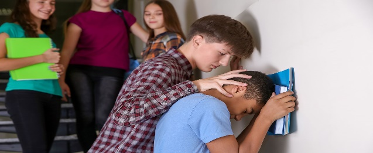
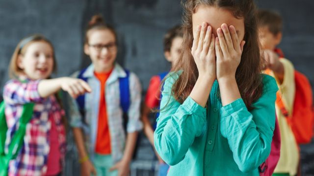
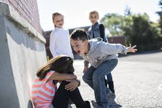
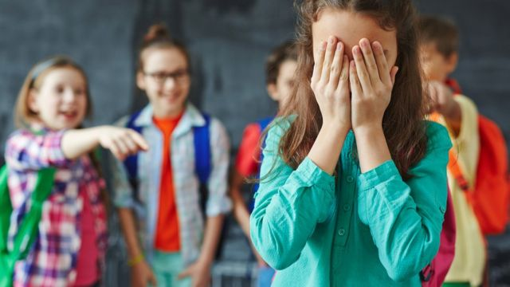
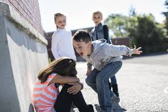

El acoso escolar (también conocido como hostigamiento escolar, mato naje escolar, maltrato escolar o en inglés school bullying) es cualquier forma de maltrato psicológico, verbal o físico producido entre estudiantes de forma reiterada a lo largo de un tiempo determinado tanto en el aula, como a través de las redes sociales, con el nombre específico de ciberacoso. Estadísticamente, el tipo de violencia dominante es el emocional y se da mayoritariamente en la clase y en los patios escolares. Los protagonistas de los casos de acoso escolar suelen ser niños y niñas en proceso de entrada en la adolescencia, siendo ligeramente mayor el porcentaje de niñas en el perfil de víctimas. El acoso escolar es una especie de tortura, metódica y sistemática, en la que el agresor sume a la víctima, a menudo con el silencio, la indiferencia o la complicidad de otros compañeros.
Las causas pueden ser personales o familiares o bien pueden deberse a la falta de control y vigilancia en la propia escuela. En lo referente a las causas personales, normalmente el niño que ejerce bullying sobre otro, en la mayoría de casos, lo hace porque es frecuentemente humillado por los adultos.
 


